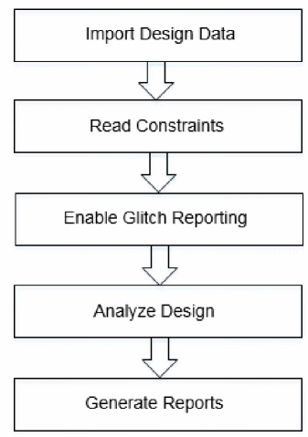

SI Glitch Analysis Flow
The following figure shows the glitch noise analysis flow:
Figure -45 SI Glitch Analysis Flow

Sample Glitch Analysis Script
The following sample script shows the steps to perform glitch analysis:
-
Load the timing libraries (.lib) and noise data (cdB, ECSM-Noise, or CCS-Noise):
read_libs
typ.lib -cdb typ.cdB -
Schedule reading of a structural, gate-level verilog netlist:
read_netlist
top.v -
Set the top module name, and check for consistency between Verilog netlist and timing libraries:
init_design
top -
Set the proper technology node:
set_db
design_process_node 16 -
Load the timing constraints:
read_sdc
constraints.sdc -
Load the cell parasitics:
read_spef
top.spef.gz -
Enable signal integrity (SI) analysis.
set_db
true -
Perform glitch analysis and enable the glitch reports to be generated
set_db
true -
Enable glitch propagation:
set_db
true -
Perform glitch analysis:
update_glitch
-
Generate SI glitch report:
report_noise
-txtfile glitch.txt
Return to top